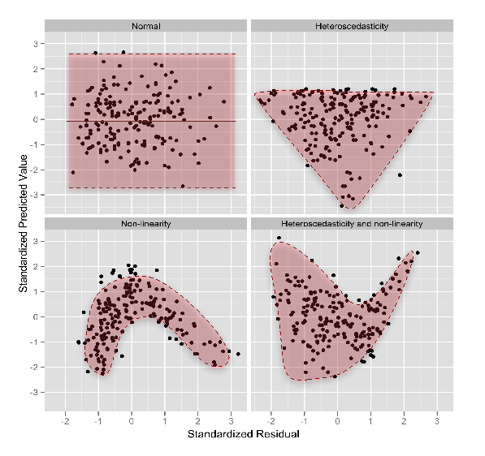
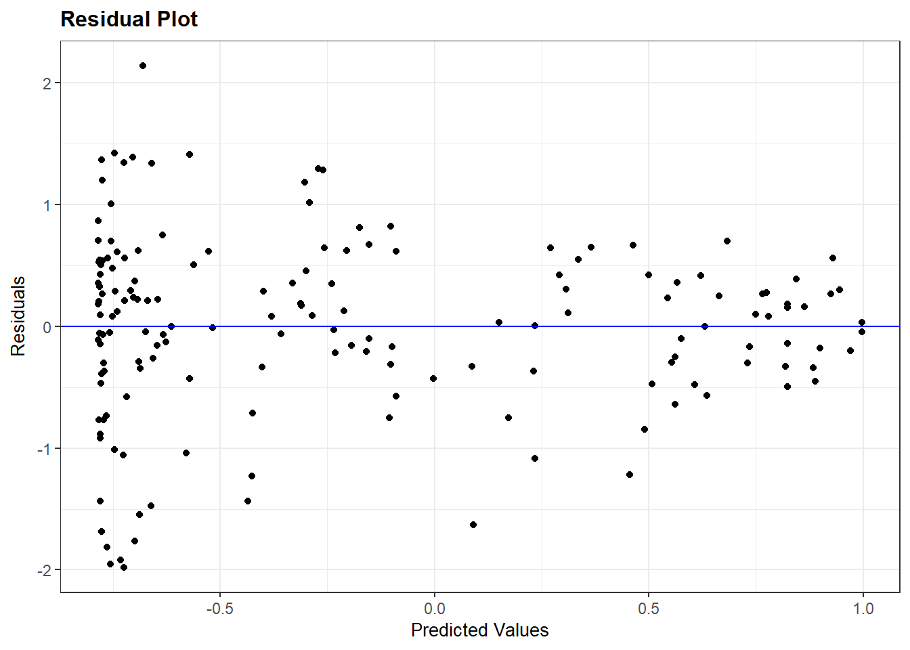
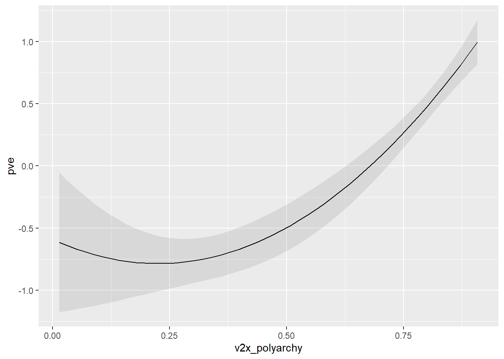

Used for several assumptions tests. Needs to be loaded beforetidyverse
2
Assumptions checks through plots
3
Data importing
4
Data manipulation/plotting
5
Regression tables
6
Predicted values & marginal effects
7
Model summaries
You should check the classic assumptions of the statistical model that you are using in your paper after running it. One of the classic assumptions for an OLS model is homoskedasticity. Homoskedasticity occurs when the variance of the model’s residuals are are about the same across model predictions. If this assumption fails, then your standard errors will be “downwardly biased” (that is, “too small”). This may mean rejecting the null hypothesis of no effect when you actually shouldn’t reject the null.
The Statistics II R materials discuss how to check this assumption in greater detail. This chapter provides some more tools for doing so. In addition, it discusses one potential tool you might use if you do find significant violations of this assumption.
16.1 Our Model
We need a model. I’ll use the same model as in the Statistics II example (but see my note below). Here, we regress a measure of political violence (pve) on a measure of a country’s level of democracy and a squared version of that democracy score to capture potential non-linearities in the relationship between democracy and violence. Here are the descriptive statistics for our DV and IV and then the model.
pve v2x_polyarchy
Min. :-2.7081 Min. :0.0150
1st Qu.:-0.7238 1st Qu.:0.2860
Median :-0.1978 Median :0.5290
Mean :-0.2016 Mean :0.5137
3rd Qu.: 0.5937 3rd Qu.:0.7545
Max. : 1.4920 Max. :0.9080
NA's :15
#Run the modelviolence <-lm(pve ~ v2x_polyarchy +I(v2x_polyarchy^2), data=demdata)
Note: I include the squared term in a different manner here than in the example in the Statistics II R materials. In those materials we first created a new variable in our data via mutate() (e.g., mutate(v2x_polyarchy_sq = v2x_polyarchy^2). The use of I() will end up doing the same thing for me but without my having to manually create the squared term. In addition, the use of I() will make it a bit easier to get a nice plot of predicted values below using the marignaleffects package (this is a bit annoying to do with the manually created squared term).
Per above, pve ranges from -2.71 to +1.49. Higher values on this measure indicate less violence in a country. Higher values on our v2x_polyarchy measure indicate greater levels of electoral democracy. The coefficients here imply…
Intercept: We should expect a pve score less than 0 (-0.589) when v2x_polyarchy (and its squared term) = 0
Coefficient for v2x_polyarchy: pve will decrease in value (i.e., violence will increase given how this variable is scaled) as v2x_polyarchy increases, but…
Coefficient for squared term: pve values will then start to increase (i.e., violence will decrease) as we move further along the polyarchy scale.
In other words, there is a curvillinear relationship between the two variables.
It might be helpful to visualize this relationship to understand the coefficients. I will use a command from the marginaleffects package called plot_predictions(): this will create a plot of predicted values for us without us having to specify specific values of the predictor variable. This is particularly useful in instances where there is a squared term since increases in v2x_polyarchy necessarily imply increases in the squared term (e.g., it’s not really possible to look at an increase in v2x_polyarchy while holding constant its square).1
1 We could emulate this figure using a command in marginaleffects called avg_predictions() . For instance: avg_predictions(violence, variables = "v2x_polyarchy") would produce predicted variables across the range of v2x_polyarchy (at its minimum, 1st quarter, median, 3rd quarter, and maximum) along with confidence intervals which we could then plot. The bands for the confidence interval, however, would look a bit more jagged than what is produced by plot_predictions() .
We can see a small decrease in pve as we move from v2x_polyarchy = 0 to v2x_polyarchy = 0.2 or so but then an increase in pve as the polyarchy variable continues to increase in value. We could use the slopes() function from marginal effects to directly estimate the slope for the line at different values of v2x_polyarchy:
The slope of a linear regression line is normally the same regardless of what value X takes on. However, the inclusion of the squared term relaxes this assumption. The slope is negative at at very low levels of polyarchy and then starts to peter out before becoming increasingly positive.
16.2 Checking the Assumption and Finding a Problem
Okay, let’s check our homoskedasticity assumption. Recall that we can do this by looking at a plot of the model’s residuals against its predictions. Ideally we will see a random cloud of dots without any obvious pattern.2Heteroskedasticity, on the other hand, would commonly show up as some type of funnel shape as in the top left figure here:
2 If our DV was discrete (e.g., took on values 1 through 7), then we’d get a row of parallel dots.

We can use the resid_panel() command from the ggResidpanel library to do this, as so:
resid_panel(violence, plots =c("resid"))

This looks problematic. There is a quite wide array of dots around -0.25 or so on the x-axis that then narrows when get towards 1 on the x-axis. This is a pretty noticeable pattern, so I’d feel comfortable saying that the assumption is being violated.
We can use some other tools to help us check this assumption as well, although these were not taught in Statistics II. There are formal statistical tests for assessing heteroskedasticity (not taught in Statistics II). In particular, we can perform what is known as a Breusch-Pagan test. The null hypothesis for this test is homoskedasticity, while the alternative hypothesis is heteroskedasticity. We can perform this test using the bptest() command from the lmtest library.
library(lmtest)bptest(violence)
studentized Breusch-Pagan test
data: violence
BP = 14.584, df = 2, p-value = 0.0006811
The p-value here is well below 0.05, which is our standard metric for assessing statistical significance. We can thus reject the null hypothesis of homoskedasticity.
One important note and caution about this test: it is sensitive to sample size much like any statistical significance test. In practice, this means that it becomes easier and easier to reject this null hypothesis with with more and more data in our model. However, our residuals are unlikely to be perfectly homoskedastic in actual data. We might thus find ourselves in situations where we can reject the null hypothesis of homoskedasticity but where there really isn’t a serious problem that we need to address. This is why we recommend focusing on the plot of residual values to see if there is a really noticeable trend there. The BP test can then be used to check one’s instincts.
16.3 What Can We Do?
We have found heteroskedasticity. That means we should be a bit careful with our claims of statistical significance. What can we do to address this issue?
Heteroskedaticity implies that our model is making better predictions for some observations than others. Ideally, then, we should try and improve our model to address this imbalance. That could involve adding predictors or perhaps transforming our variables in some fashion.
It is not always clear how exactly we should improve our model, however. One thing we could do in such a situation is to use what are known as “heteroskedastic-robust” or “heteroskedastic-consistent” standard errors. These are standard errors that are calculated in a different way and which are more ‘robust’ to the violation of this assumption. Their use does not “fix” our problem - if heteroskedasticity is present due to a variable that is missing from our model, then using these SEs does not magically make our model better (or avoid the bias that the exclusion of the confounder introduces into our coefficient estimates). However, we could use this tool to probe whether our conclusions are robust to a more conservative test.
The easiest way to include heteroskedastic-robust standard errors in your results is via the modelsummary() command that you will use when reporting your regression results. See this section on the marginaleffects website. We can toggle the use of these SEs via the vcov option. There are various types of robust SEs, but we’ll use the “HC3” option as this is a pretty standard one. (Note: you might have to also install the sandwich library as modelsummary uses it to calculate the standard errors.)
Here is an example of how to do that:
modelsummary(violence, gof_map =c("nobs", "r.squared", "adj.r.squared"), stars = T,vcov ="HC3",coef_rename =c('(Intercept)'='Intercept', 'v2x_polyarchy'='Polyarchy Score', 'v2x_polyarchy_sq'='Polyarchy Squared'), notes =list("OLS Coefficients with Heteroskedastic-Robust SEs in Parentheses"))
1
Changes the way the standard errors are calculated.
tinytable_fovsl53sx7n7uslsff98
(1)
+ p < 0.1, * p < 0.05, ** p < 0.01, *** p < 0.001
OLS Coefficients with Heteroskedastic-Robust SEs in Parentheses
Intercept
-0.589+
(0.303)
Polyarchy Score
-1.731
(1.249)
I(v2x_polyarchy^2)
3.829***
(1.107)
Num.Obs.
164
R2
0.401
R2 Adj.
0.394
The main difference from other examples you’ve seen is vcov = "HC3". That is what will update the standard errors.
Let’s take a step back and compare results. Here is syntax that produces a regression table wherein Model 1 uses the standard SEs reported in lm() (the “classical” SEs) and Model 2 reports the robust version:
modelsummary(violence, gof_map =c("nobs", "r.squared", "adj.r.squared"),stars = T, vcov =c("classical", "HC3"), coef_rename =c('(Intercept)'='Intercept', 'v2x_polyarchy'='Polyarchy Score', 'v2x_polyarchy_sq'='Polyarchy Squared'), notes =list("OLS Coefficients with Classic (Model 1) or Heteroskedastic-Robust (Model 2) SEs in Parentheses"))
tinytable_jlhy00qynwx37xxwhyry
(1)
(2)
+ p < 0.1, * p < 0.05, ** p < 0.01, *** p < 0.001
OLS Coefficients with Classic (Model 1) or Heteroskedastic-Robust (Model 2) SEs in Parentheses
Intercept
-0.589*
-0.589+
(0.243)
(0.303)
Polyarchy Score
-1.731
-1.731
(1.098)
(1.249)
I(v2x_polyarchy^2)
3.829***
3.829***
(1.051)
(1.107)
Num.Obs.
164
164
R2
0.401
0.401
R2 Adj.
0.394
0.394
We can note a few things here:
The coefficients have not changed. Altering the way the SE is calculated will not effect the coefficient estimate.
The HC3 SEs are slightly larger. This is typically what happens since heteroskedasticity introduces a downward bias (too small) on the standard errors.
Our overall conclusions are unchanged - while the SEs increase in value, the increase is pretty small and does not affect any of the statistical significance tests we care about.
We can also incorporate these types of SEs into our plots of predicted values, etc., by using the vcov option in the requisite commands. For instance:
#Plot of predicted valuesplot_predictions(violence, vcov ="HC3", condition ="v2x_polyarchy")

#Slopes at various levels of democracyslopes(violence, newdata =datagrid(v2x_polyarchy =c(0, 0.10, 0.25, 0.5, 0.75)), vcov ="HC3")